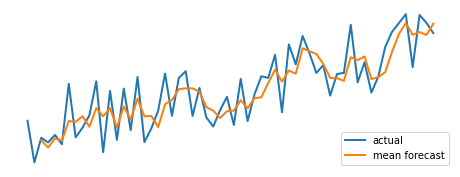

The need to forecast[^1]
“It’s difficult to make predictions,” said Niels Bohr, “especially about the future”. This remark strikes as funny, almost oxymoronic. After all, what else is there to predict, except the unknown future? However, the famous physicist had a point. His quip encapsulates our age-old frustration with our quest for foretelling the future.
We need to know the future because it is fundamental for our survival: We had to guess when wild herds of game will return so that we can hunt them, when the snow will fall so that we stock up food in advance, when lions will roam the plains so that we can avoid them. Lacking superior muscular strength and agility, we relied on our brains which evolved to recognize patterns and imagine the future.
Civilization did not reduce the need to foretell. If anything, this need became even more acute: When will the river Nile flood? Will we have enough rain for the crops? Will my army be victorious in the upcoming war? Will my ship go down in a storm? How much return will I get for this investment? How many amphoras of olive oil will my farm produce next year?
Desperate to get answers, people asked oracles for gods’ judgment, inspected the entrails of sacrificed animals, recorded the movements of stars. In time, scientific laws and methods of statistical pattern recognition took over. We’d like to think that they perform better than inspecting the livers of sheep. Sometimes, they do.
Simple methods
How do you forecast if you don’t know anything? The simplest way is to assume that the future will be the same as the past: The monthly return of your investment will be the same as the last month. The wind turbine will produce the same amount of energy in the forthcoming hour as in the past hour. There will be as many visitors to your online store today as yesterday.
This is aptly called the naive forecast, as it is highly myopic and does not involve any sophistication. Still, it can be surprisingly successful, as things do not change too rapidly if you look at them in short time intervals. In any case, the naive method provides a baseline against which other methods can be compared. It is the initial step for any attempt at forecasting.
There is always some variation around the “real” value, which we model as a random variable. The universal way to reduce this variation is averaging: Your forecast will be the mean of a number of past values (the mean method). How many past values? It depends on your data and the nature of the system you examine. You should inspect your data, plot it, and decide accordingly.
Often the data shows a trend. Daily purchases in your online store do, hopefully, increase in time due to the arrival of new customers, resulting in an upward trend.

Furthermore, some items may be demanded more on some days than others. For example, school supplies purchases show a yearly seasonal cycle. Similarly, more cars are rented on weekends than on weekdays, and more electricity is consumed in the evenings than at midday. If you naively assume that the electric demand at 19:00 will be the same as that at 17:00, you will end up with planning problems, to say the least. Instead, assuming that the demand at 19:00 today will be the same as that at 19:00 yesterday is closer to truth. This is called the seasonal naive forecast.
Exponential smoothing
Naive methods are a good start, but they will take us only so far. A good statistical model should exploit all the available information in the data, going as far back into the past as possible. For example, to determine how much traffic your website will get tomorrow, you might get the average of all daily visit counts. This would be equivalent to the mean method described above.
However, the past is not uniform. A lot of things have changed since your website was first launched, and data from a year ago may not contain much useful information about today.
You realize that you should not give the same weight to all the data. Recent values should influence the forecast more strongly, while those in the past should have little effect, if any. So, you do a weighted average of your data: Yesterday’s weight is, say, 0.1, the day before has weight 0.09, the one before has weight 0.08, and so forth.
This method is called simple exponential smoothing. The word “simple” indicates that it applies to data without trend or seasonality. “Exponential” refers to the fact that the weights are reduced by multiplying with the same small number, so they decay with an exponent further into the past.
Simple exponential smoothing has the nice property that forecasts correct themselves in the right direction: If it turns out that the forecast for today exceeds the actual value, the next forecast is reduced accordingly.
If your data contains a trend or seasonality, you might want to use the Holt-Winters method, which is designed to handle such regularities. Simply put, this method incorporates the difference between the estimates at each step and the seasonally-adjusted observations (say, differences between the same days of the week), and weights them exponentially as in the simple method. Although the equations are only moderately complicated, it is advisable to use a software tool or a programming library to do the calculations for you.
ARIMA
The workhorse of forecasting, ARIMA, stands for AutoRegressive Integrated Moving Average. Fundamental ideas of ARIMA are similar to those of exponential smoothing: We give different weights to past values and to the forecasting errors of the past.
The autoregressive in ARIMA means that we use the previous data points to estimate the future. This is essentially a linear regression: We multiply each past value by a factor and add them together to get an estimate. The best values for these multipliers are determined by fitting them into the data.
Similarly, ARIMA takes past forecast errors and adds them together after multiplying each one by a parameter. This can be seen as a moving average of past errors, hence the name. Again, the values of multipliers are determined by fitting the data.
A fundamental assumption of ARIMA is that the data are required to be “stationary”. In essence, this term means that the data should “look the same” at all times. This does not mean that it should be a flat line, but its statistical properties, such as the mean and the variance, should stay roughly the same.
For example, the price of a stock is not stationary: It goes steadily up, later maybe down, but essentially you can tell the time window if you are familiar with the market. On the other hand, the daily returns of the stock (day-to-day differences of its price) might be closer to being stationary.
For this reason, we need to check if the data is stationary before applying ARIMA. If not, we generate a new data series composed of the differences between successive values, check if this new series is stationary, and repeat the differencing as needed. Statistical tests such as the unit root test, or checking the autocorrelation function are helpful to decide if you are good to go.
If you have a seasonality pattern in your data, such as yearly, weekly, or daily changes, you can use the seasonal ARIMA (SARIMA) method. This method selects data according to the seasonality period (for example, the same hour in the day for daily seasonality) and fits an autoregressive and moving-average model, similar to the plain ARIMA.
ARIMA requires three parameters: The number of autoregressive steps, the number of differencing required for stationarity, and the number of moving-average steps. SARIMA, in addition, requires similar parameters for seasonally-adjusted terms. Not all combinations of parameters make mathematical sense, and the selection of correct parameter values involves some trial-and-error.
Multiple time series, external variables
In some cases, you would want to forecast several related quantities, such as the prices of a group of stocks. You can always set up a separate forecast model for each, but this approach would not capture the predictive power of one stock about the other. A model such as VARMA (ARIMA with vector inputs) treats all the data together, allowing you to squeeze out more information from the past.
Even if you are forecasting a single quantity, incorporating other data might increase the accuracy. For example, to predict the hourly electricity demand, we might consider the local air temperature, time of the day, any day of the week as influencing factors. Such factors are termed exogenous, meaning that we treat them as external factors. In contrast, variables that we want to forecast are termed endogenous. Models such as ARIMAX (ARIMA with eXogenous) are designed to add exogenous variables to the forecaster.
More advanced methods
Methods such as ARIMA and exponential smoothing are essentially linear methods. Linear models, although sufficiently accurate most of the time, may fail to capture nonlinear features and interactions between features.
Using past values and exogenous variables as features, one can set up a regression model. Quite a few machine learning algorithms perform regression without assuming a linear form, such as support vector machines, neural networks, and gradient boosting. If the data do not quite fit a linear model, such algorithms may prove to be more successful.
Recurrent neural networks (RNN) is a deep learning algorithm designed to work with sequential data. One of its extensions, The Long Short-Term Memory (LSTM) algorithm, is an extension of it, designed to look farther into the past.
RNN and LSTM have proven their worth in tasks such as automated text generation or speech recognition. However, they have had mixed success for time-series forecasting. In addition, their training requires significant processing power, and they are not feasible except for very long time series.
Bayesian Structural Time Series (BSTS) model assumes that observed values are generated by latent (hidden) states and figures out the probability distribution function of these hidden states using Bayesian inference. It is able to use exogenous variables together with the time series itself. BSTS can give credible intervals about the forecasts, which is useful to assess the error of the estimate.
Facebook’s open-source package Prophet is a general model representing the forecast as the sum of trend and seasonality, and it can also incorporate holiday effects. Unlike most other methods, it can handle multiple seasonalities. Nonlinear trends with yearly, weekly, and daily seasonality can be fit.
Which one is the best method?
Statisticians have wrestled with this question for many years and tried to compare the performance of algorithms with the so-called M-competitions. Upon analysis of competition entries, each provided by experienced researchers, it was concluded that: “Statistically sophisticated or complex methods do not necessarily provide more accurate forecasts than simpler ones.”
It seems that there is no “The One Algorithm” to foretell the future.
However, there is a silver lining. These competitions also show that combining several methods (for example, by averaging the forecasts) gives a more accurate forecast compared to individual methods. So, developing several independent simple forecasters and averaging their outcomes seems to be a better use of your time than tweaking a sophisticated deep-learning network for many weeks.
It turns out that Bohr was right. Predicting the future IS significantly hard.
(Data in the figures is taken from the Synthetic Control Chart Time Series Data Set in the UCI Machine Learning Repository. The statsmodels library is used for exponential smoothing.)
(This post was first published in Kavaken company blog on October 26, 2021.)